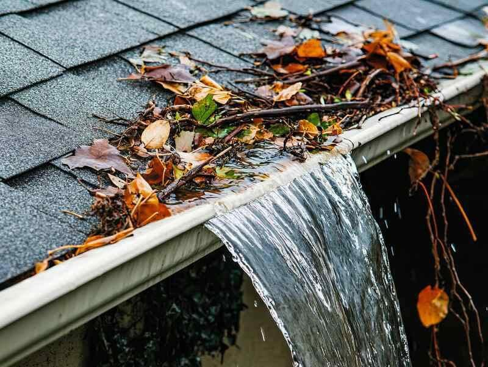
Gutter clearing & repairs
Available nowBlocked gutters overflow, stain walls and lead to damp. We clear out leaves and moss, check the downpipes are running and carry out servicing and repairs.
Bookings now open for gutter clearing, repairs and pressure washing. Secure your spot
A cleaner, brighter tomorrow
Gutters, driveways, patios, windows, cladding, conservatory roofs and solar panels, cleaned properly by a local team. For homes, businesses and industrial sites.
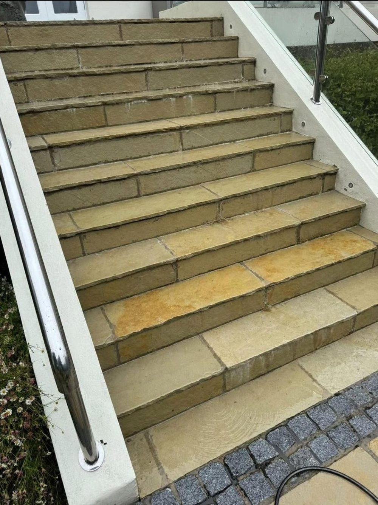
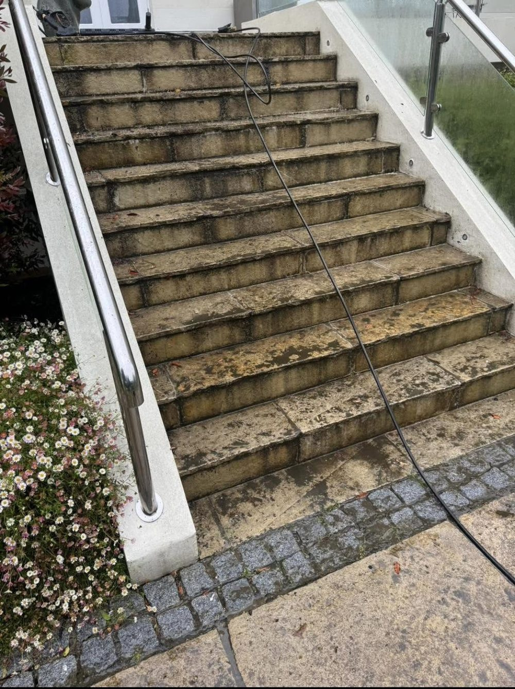
From blocked gutters to green patios, we look after the outside of homes and businesses across the island.
Available now
Gutter clearing & repairs and pressure washing
Protect your property and get everything looking fresh again. Message us to secure your spot.
Book your spot
Blocked gutters overflow, stain walls and lead to damp. We clear out leaves and moss, check the downpipes are running and carry out servicing and repairs.
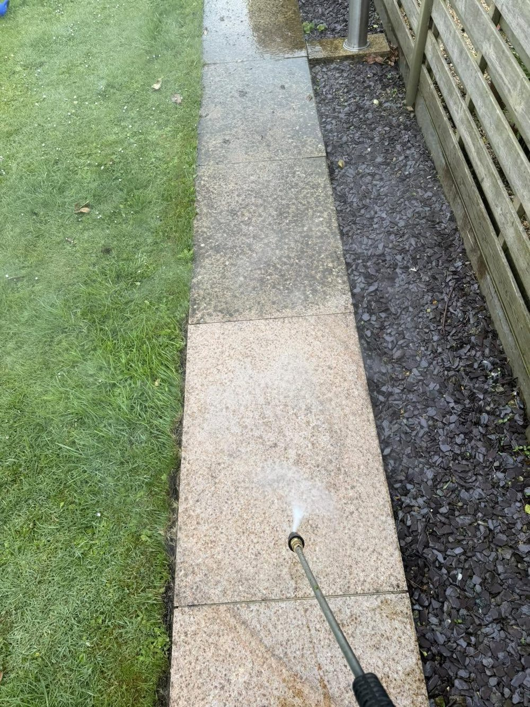
Driveways, paths, patios and steps brought back from green and grey. We lift dirt, moss and algae from block paving, granite, sandstone and concrete.
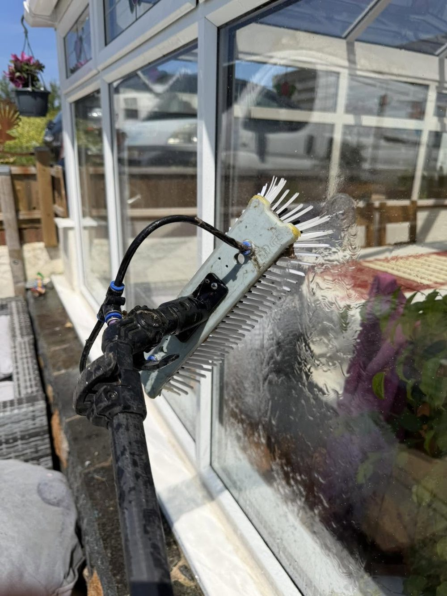
External and internal window cleaning, frames and sills included. Our water-fed pole system reaches upstairs windows safely from the ground.
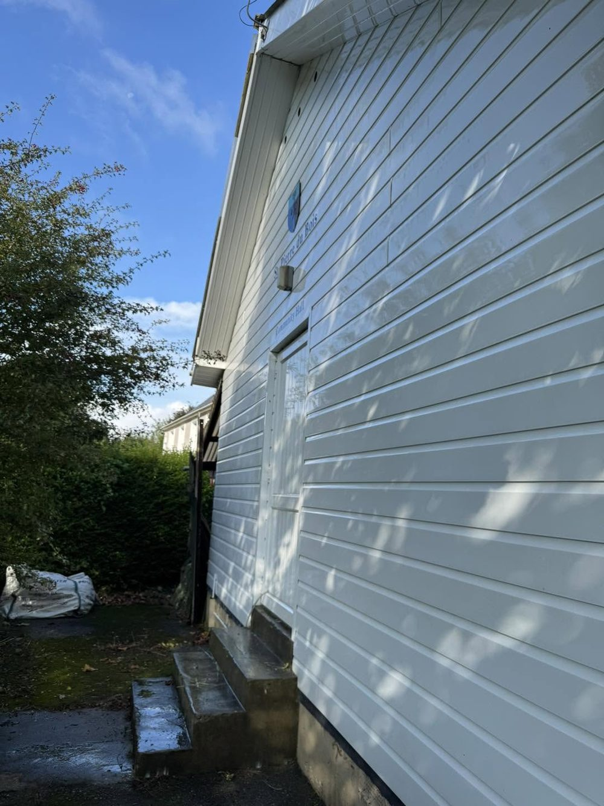
Low-pressure cleaning for render, cladding, fascias, soffits and PVC windows. It treats algae at the root rather than blasting it, so surfaces stay cleaner for longer.
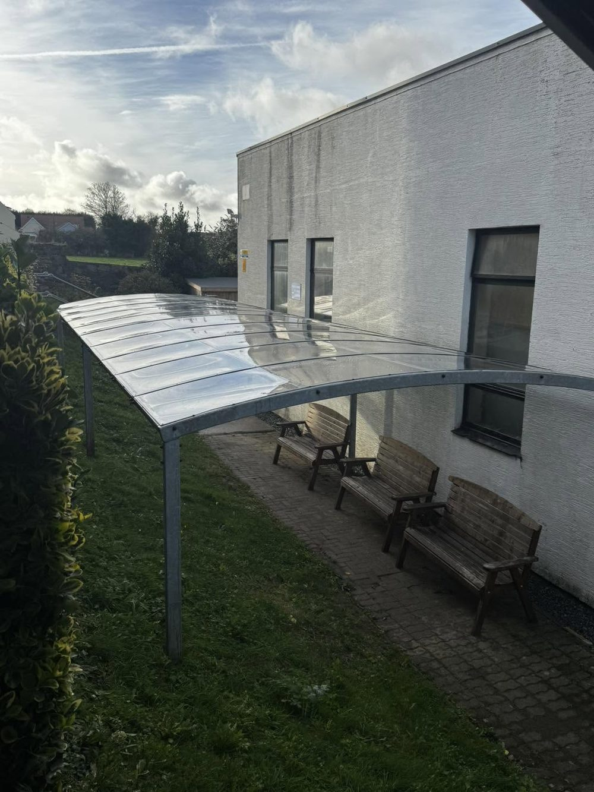
Green, cloudy roof panels made clear again. We clean polycarbonate and glass roofs, their frames and the gutters that run along them.
Dirt, salt and bird mess on panels cut how much power they make. A careful clean helps them keep working at their best.
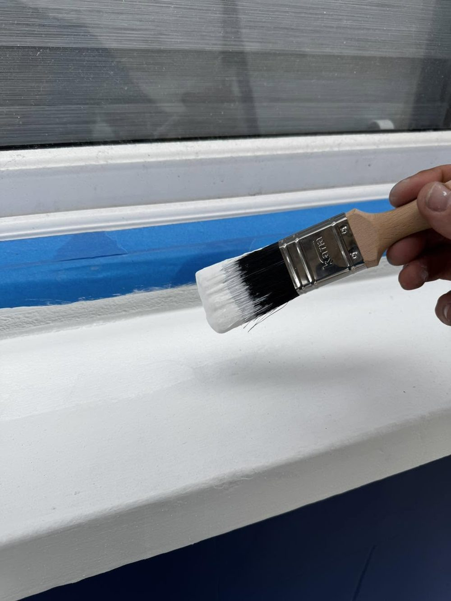
Painting, sill restoration and odd jobs around the outside of the property, done by the same team that cleans it.
Drag the handle across each photo to see the difference.
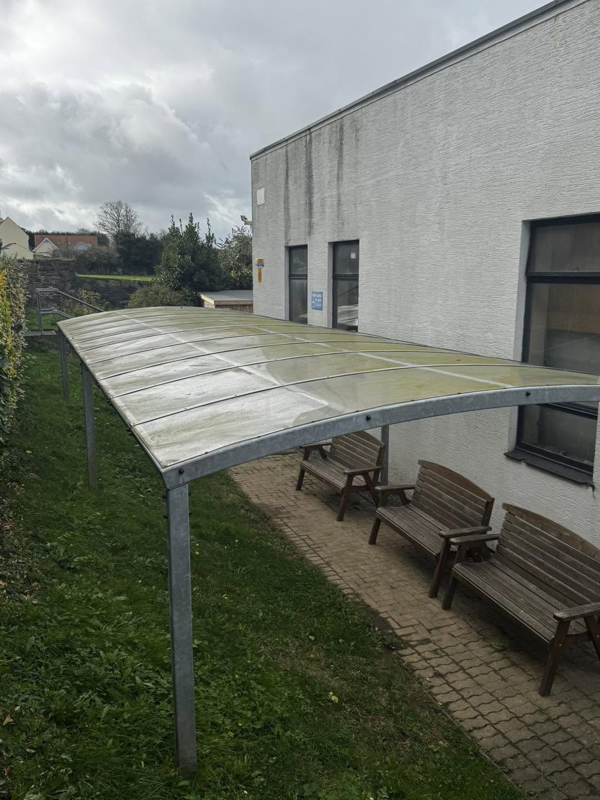
This long walkway canopy had turned green and cloudy with algae. We cleaned every panel and the frame so light comes through again and the seating underneath feels bright and welcoming.
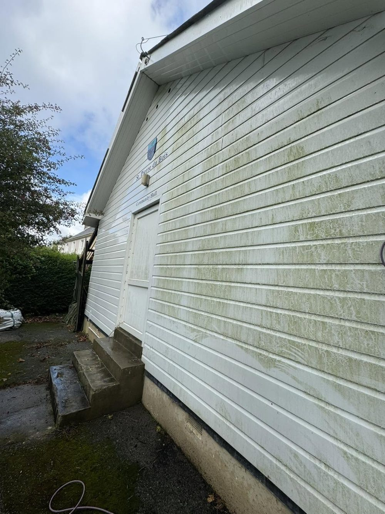
Green streaks had spread right across the PVC cladding on this St Pierre du Bois hall. A softwash cleaned it back to white without damaging the boards, signage or seals.
Dark, slippery and covered in algae, these steps had lost their colour completely. A careful pressure wash brought the warm sandstone back and made them safer to walk on.
Call, email or fill in the quote form. Photos of the job help us price it quickly.
We'll talk through what you need and give you a clear price for the work.
Pick a date that suits you. We turn up when we say we will and leave the site tidy.
A cleaner, brighter property. Book a repeat visit whenever it needs one.
H2O Cleaning Services is the external cleaning arm of Pete's Maintenance & Landscaping Services. We look after homes, businesses and industrial sites in Guernsey, and we're proud of the work we leave behind.
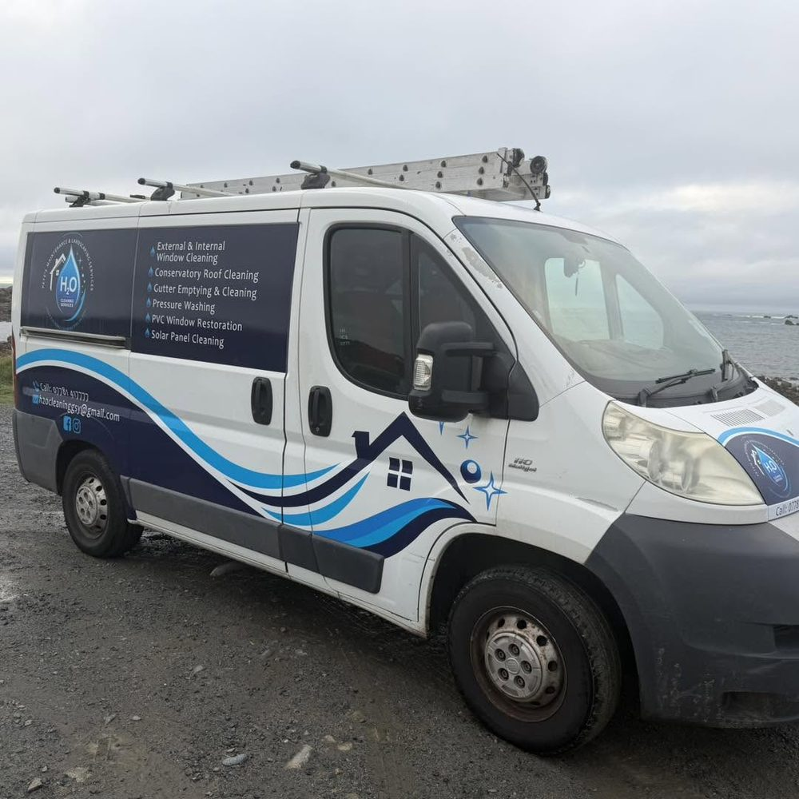
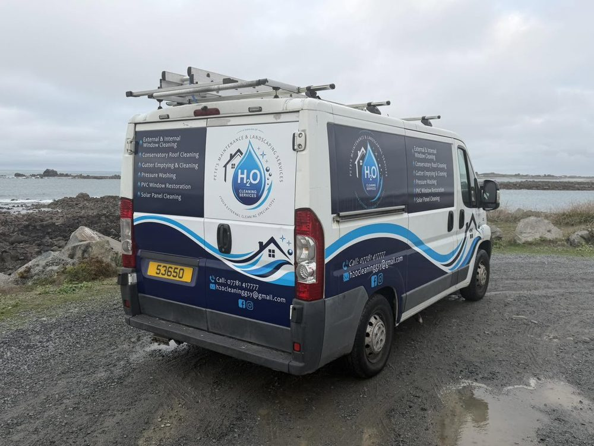
Spotted the van around the island? Give us a wave.
Can't see yours? Call 07781 417777 and we'll happily help.
We're based in Guernsey and work on homes and businesses around the island. Pop your parish in the quote form and we'll confirm.
Pressure washing uses high-pressure water to lift dirt from hard surfaces like driveways, patios and steps. Softwashing uses low pressure with a cleaning solution, so it's safe for render, cladding, roofs and PVC, and it kills algae rather than just blasting the surface.
Most homes need it at least once a year, ideally after the autumn leaves have come down. If you're close to trees, twice a year keeps water flowing and stops overflow staining your walls.
Not usually for outside work, as long as we can get access. Let us know about gates, parking or pets when you book. For internal window cleaning we'll arrange a time that suits you.
Yes. As well as homes, we clean for businesses, community buildings and industrial sites. Get in touch and tell us about the site.
Use the quote form below, call 07781 417777 or email h2ocleaninggsy@gmail.com. Photos of the area you'd like cleaned help us price it quickly.
Send a few details and we'll get back to you with a price. Prefer to talk? Give us a call.
Thanks! We'll be in touch soon with your quote. For anything urgent call 07781 417777.